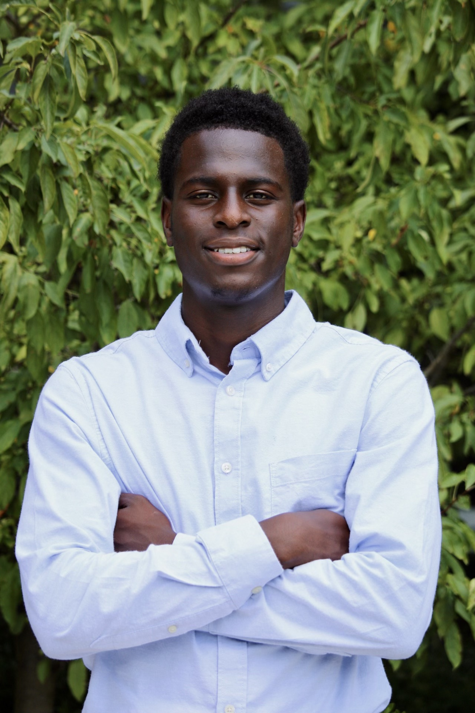

My name, Oyindmola, has roots in Yoruba, a native language of Nigeria, meaning "honey mixed with wealth.
As a driven and enthusiastic 2nd-year IST student, I am passionate about technology and its ability to bring value to people's lives. With my interest in programming and talent for creating motivational content, I am dedicated to further honing my technical knowledge and leadership skills to shape the future of technology and make a positive impact on society.
In my leisure time, I strive for a balance between my academic pursuits and physical activity, including playing soccer and working out.
CodePath x FutureForce Tech Launchpad Finalist Interview